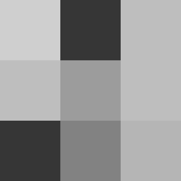

About me
My name is Alice! I was born in Brazil and used to live with my family in Minas Gerais. I am currently living in Portugal, being a student and giving attention to my family. I love to travel and visit places with beautiful landscapes.
Section 2
"Grey (more frequent in British English) or gray (more frequent in American English)[2] is an intermediate color between black and white. It is a neutral or achromatic color, meaning that it has no chroma.[3] It is the color of a cloud-covered sky, of ash, and of lead.[4]" -Grey, Wikipédia
